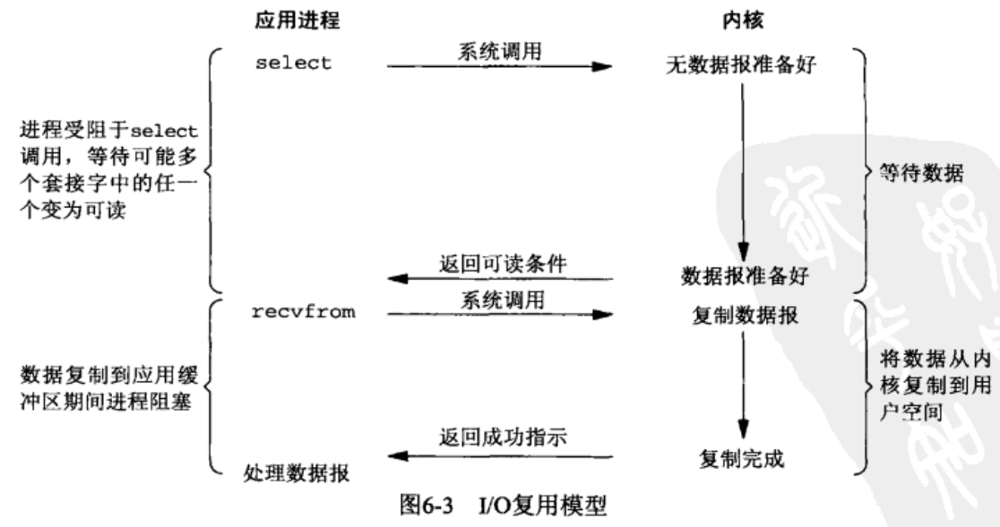

标准IO
文件IO
终端IO
高级IO
非阻塞IO
IO多路复用

select
传给select的参数告诉内核：
- 我们关心的描述符
- 对于每个文件描述符关心的条件（读，写，异常）
- 愿意等多久
- 已经准备好的描述符总数量
- 对于读，写，异常这3个条件的每一个，哪些已经准备好
#include <sys/select.h>
/*
* param maxfdp1 监测最大个数
* return < 0:出错
> 0:有事件产生
= 0:超时
*/
int select (int maxfdp1, fd_set * readfds,
fd_set * writefds,
fd_set * rxceptfds,
struct timeval * tvptr);
/* select 可能有一个或者多个事件产生，集合中除已发生事件外，将被清空 */
tvptr == NULL永远等待tvptr->tv_sec == 0 && tv_ptr->usec == 0: 不等待- 'tvptr->tv_sec != 0 || tvptr->tv_user != 0 ' 等待指定的秒数或者微妙数
```c / 若 fd 在描述符集中 返回非0 / int FD_ISSET(int fd, fd_set *fdset);
void FD_SET(int fd, fd_set fdset); void FD_CLR(int fd, fd_set fdset); void FD_ZERO(fd_set *fdset); ```
poll
#include <poll.h>
struct polled {
int fd; /* 文件描述符 */
short events;/* 监测的事件 */
short revents; /* 产生的事件 */
};
/**
* param timeout -1: 永远等待
* 0: 不等待
* >0: 毫秒
*/
int poll(struct pollfd fdarray[], nfds_t nfds, int timeout)
poll类似select，但是poll 用于任何类型的文件描述符。不为每个条件（读，写，异常）构造一个描述符集，而是构造了一个polled结构的数组，每个数组元素指定一个描述符以及我们感兴趣的条件
| 标志名 | events | revents | 说明 |
|---|---|---|---|
| POLLIN | * | * | 可以不阻塞的读高优先级数据以外的数据（等效于 POLLRDNORM|POLLRDBAND） |
| POLLRDNORM | * | * | 可以不阻塞的读普通数据 |
| POLLRDBAND | * | * | 可以不阻塞的读优先级数据 |
| POLLPRI | * | * | 可以不阻塞的读高优先级数据 |
| POLLOUT | * | * | 可以不阻塞的写普通数据 |
| POLLWRNORM | * | * | 与POLLOUT仙童 |
| POLLWRBAND | * | * | 可以不阻塞的写优先级数据 |
| POLLERR | * | 已出错 | |
| POLLHUP | * | 已挂断 | |
| POLLNVAL | * | 描述符没有引用一个打开文件 |
epoll
信号驱动IO